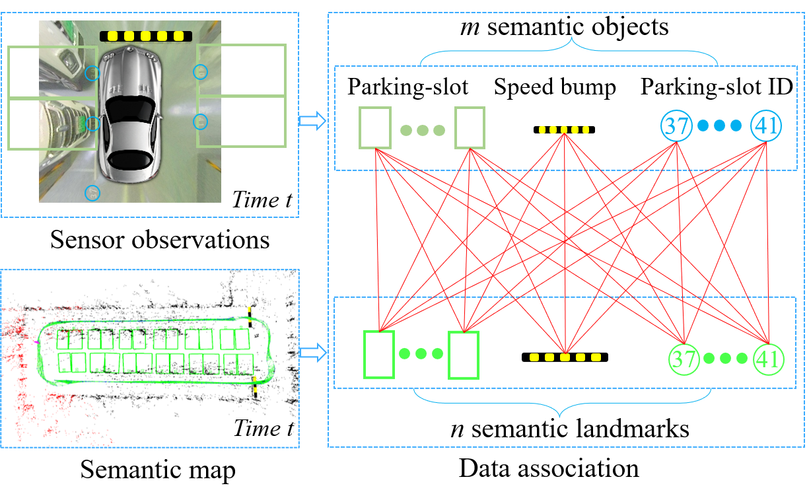
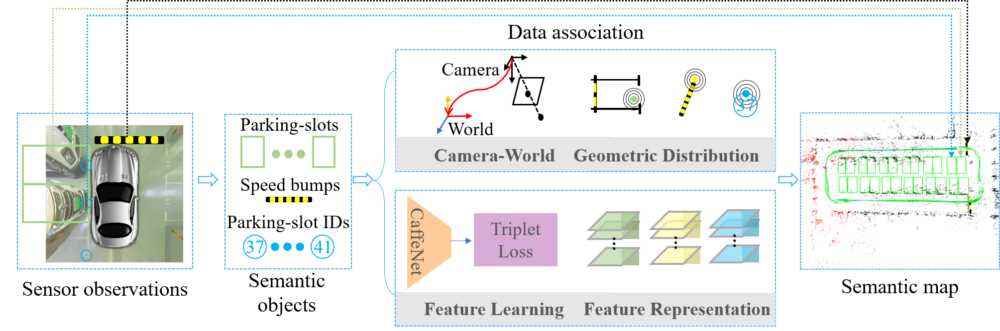

|
Robust Surround-view Data Association in SLAM Systems for Indoor Parking Xuan Shao1, Lin Zhang1,Tianjun Zhang1, Shengjie Zhao1 and Yicong Zhou2 1School of Software Engineering, Tongji University, Shanghai, China 2 Department of Computer and Information Science, University of Macau, Macau, China |
Abstract
Semantic VI-SLAM (Visual-Inertial Simultaneous Localization And Mapping) systems for autonomous indoor parking perceive the parking environment by constructing a map with various semantic objects. When building such a semantic map, a crucial data association problem exists. It refers to relating each semantic object currently observed with an existing landmark in the map.However, data association remains unresolved due to the fact that the change in the appearance of each semantic object when the vehicle moves may lead to incorrect observation-landmark matchings. By contrast, surround-view imagescaptured from a top-down viewpoint can encode both easily recognizable and appearance-consistent semantic objects on the ground. Thus, in this paper, we aim to develop a robust data association approach integrating both geometricand semantic measurements of surround-view objects. Specifically, to ensure geometric accuracy, the metric information provided by surround-view images is utilized to refine the scale of the SLAM system, whose initial value is imprecise because of the low accuracy of the IMU (Inertial Measurement Unit) measurement. Additionally, we propose a novel semantic feature learning model with a triplet loss to effectively extract the unique feature of each surround-view object. It encourages all representations of one surround-view semantic objectwhen viewed from different perspectives to be projected onto a single point in the embedding space. By integrating both geometric and semantic measurements, our proposed data association approach significantly outperforms traditional ones in accuracy and robustness. Extensive experiments in typical indoor parking environments validate the effectiveness and efficiency of the proposed data association approach. The relevant code has been made publicly available at https://shaoxuan92.github.io/SDA.
Overall Framwork
The data association is conducted based on three categories of semantic objects in surround-view images including parking-slots, speed bumps and parking-slot IDs. Both geometric and semantic measurements of these surround-view semantic objects are exploited in pursuing the optimal data association results..

Relevant Dataset and Code
2. Data&Code
2drb
Last update: November. 8,2021